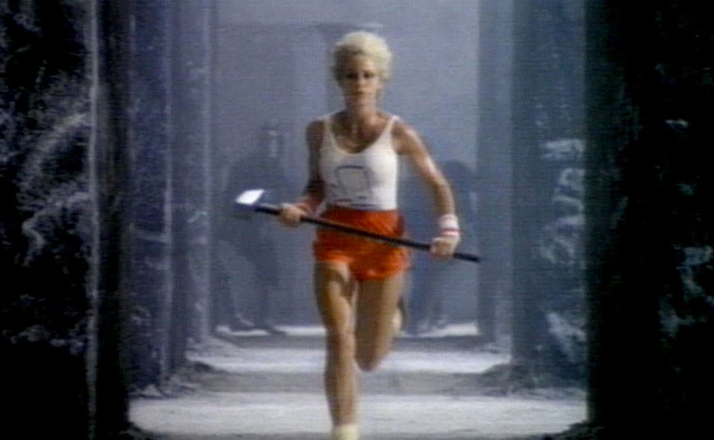

NEW DYSTOPIAS
EMERGED
Not a happy place, not an error, but a dystopian consensual hallucination. What in some years would become what we understand as Internet was first born out of gritty cyberpunk fiction, a cyberspace imagined as a trash fire in response to a trash fire. So how did this apocalyptic vision—written in the shadows of the Cold War and the coming nuclear annihilation—become utopian? The aspiration for a space of freedom, escape, and libertarian self-interest rises from individual voices of freedom that ultimately erased so many people. Dystopia created utopia, as utopia created dystopia. The juxtaposition of expectations on behalf of an immaterial space propelled us into an everlasting world of idealism.
[A] Chun, Wendy. 2021. Discriminating Data: Correlation, Neighborhoods, and the New Politics of Recognition.
[B] Crawford, Kate. 2021. Atlas of AI: Power, Politics, and the Planetary Costs of Artificial Intelligence.
 Illustrations of conceptual megastructures
Illustrations of conceptual megastructures
for NASA (1975), by Rick Guidice
Dystopian
destruction World-destroying liberation envy is not the only solution. (...) Notions of dystopian destruction and surviving the apocalypse are not new; rather, they stem from the very emptying of Indigenous lands into the “New World”, a move that haunts “new media” and its frontier dreams. By following rather than usurping struggles for equality and freedom, we can move from apology to reparations, from dreams of escape to modes of inhabiting.
It is because our current society is so unequal that it seems easier to imagine the end of humanity than the end of injustice or capitalism. To inhabit this world together, we need—among so many other things—to understand how machine learning and other algorithms have been embedded with human prejudice and discrimination, not simply at the level of data, but also at the levels of procedure, prediction, and logic, one apology at a time.
[A]

Stills from “1984” Macintosh commercial
(1984), by Apple